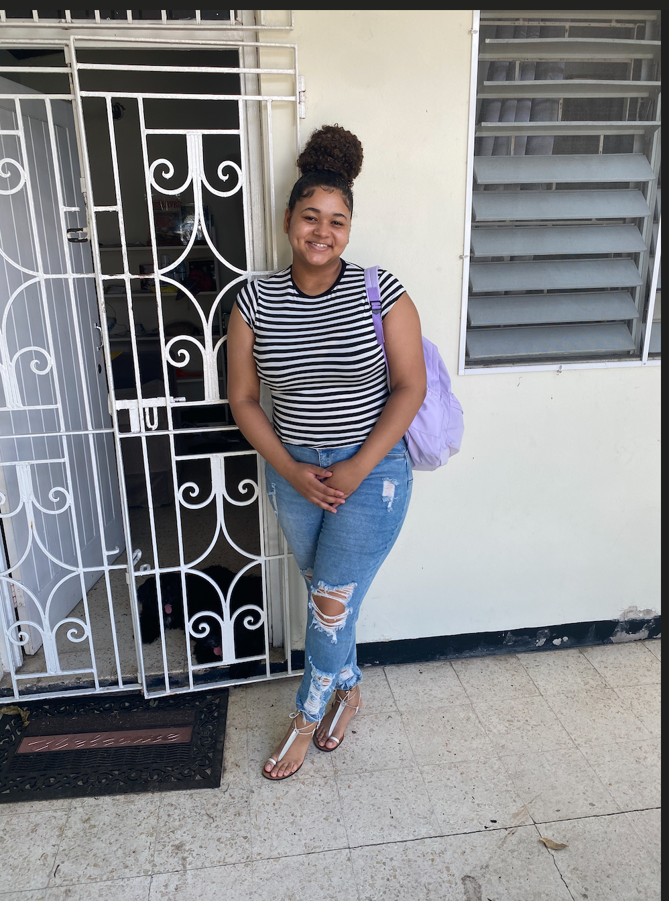
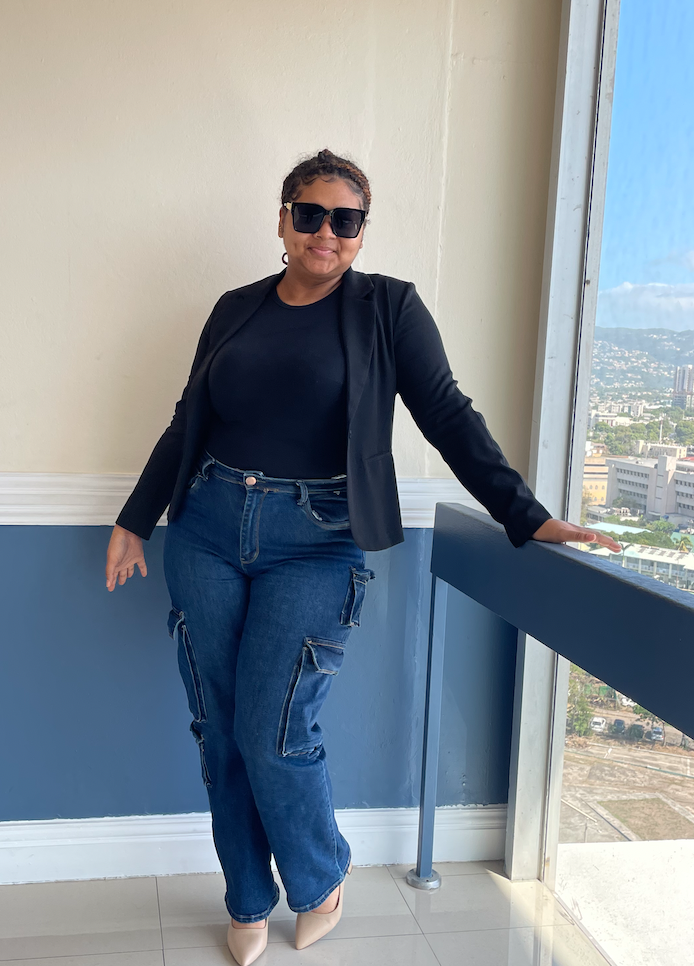

Hey there! I'm Chae Francis. When I'm not going to school, you can find me experimenting with new recipes in the kitchen üç≥ or getting lost in a good romance novel or Jamaican wattpad booksüìñ.
About Me
I'm a passionate and curious individual who loves exploring creativity in all forms. Whether it's cooking, reading, or diving into new projects, I approach everything with enthusiasm and an open mind. I believe in continuous learning and embracing new challenges to grow both personally and professionally.
Currently, I am pursuing a Bachelor of Science in Computer Information Systems, aiming to build a strong foundation in technology and problem-solving skills. I believe that staying curious and open to new ideas is key to both personal and professional success.